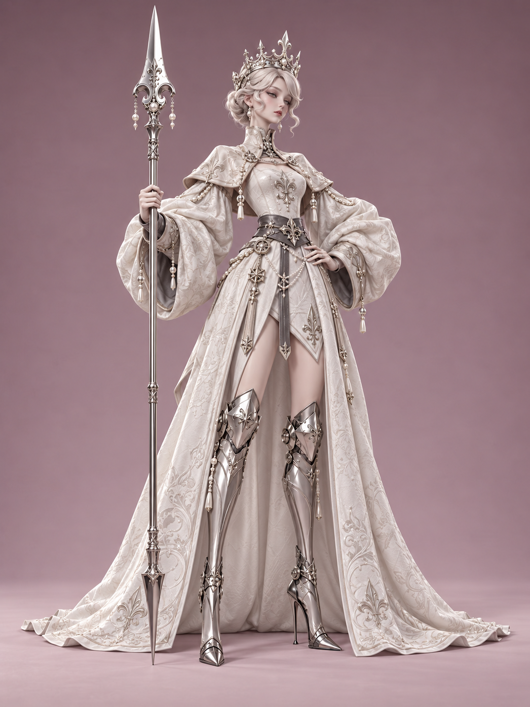
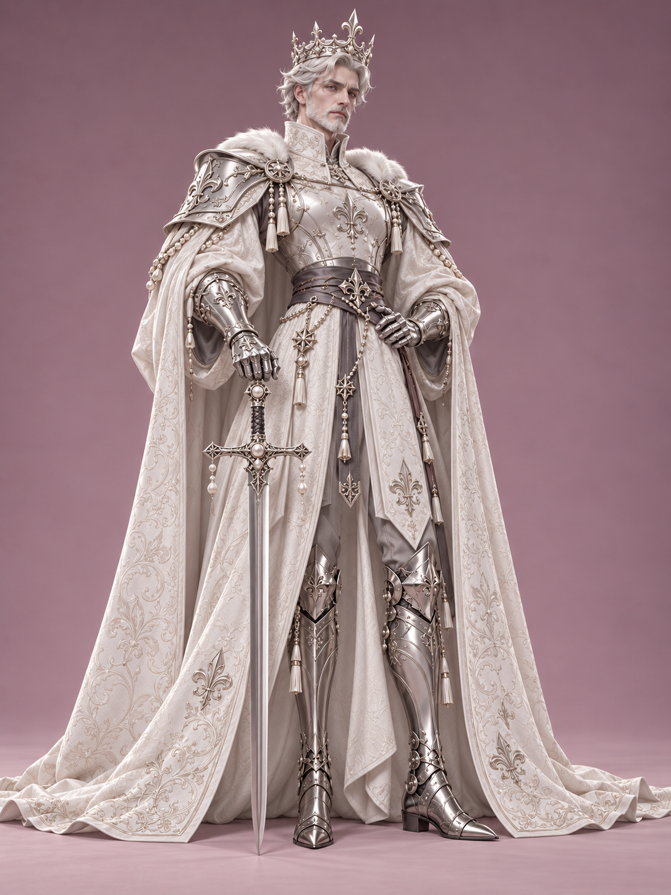

先看人物本身
身份特征候选
记录脸型、年龄感、头身关系与承担身份的轮廓。说明保留理由如何连到人物设定，不把阴影造成的冷峻感直接当成骨相。
CHARACTER DESIGN · 2026.10
一次关于统一美术语言与独立角色身份的设计实践。
先读懂参考图的共同规则，再将规则转化为方法；通过公主与国王两次创作，观察同一套视觉系统如何容纳新的身份、年龄与性格。
阅读案例 ↓

01 / READING THE REFERENCES
最初的任务并不是立即出图，而是深入分析三张图：从身材、五官到服装、材质、灯光和背景，找出可以反复使用的设计逻辑。
“这三张图片 是统一的美术风格 但角色的独立设定都不一样……总结这套设计的逻辑……整理成一套完整的设计路径。”最初需求 · 摘录
“星仪、钟铃、月潮”是本案例根据可见元素使用的分析标签，并非作品的官方角色名称。
先看人物本身
记录脸型、年龄感、头身关系与承担身份的轮廓。说明保留理由如何连到人物设定，不把阴影造成的冷峻感直接当成骨相。
再判断是否必要
单列发饰、珠链、纹样和金属附件。先判断它承担识别还是表面丰富度，再决定保留、替换或删减；皇冠也不能一概视作可有可无。
与角色特征分开
把灰粉背景、全身构图、柔光与反射强度另列一栏。它们会影响观感，但换背景或光照，不应自动被判断为换了一个角色。
任选一张参考，分别写出身份特征候选、装饰与可替换项、呈现条件；每栏指出一个可见部位与判断依据，不确定就标“待核验”。再回答：换掉某件装饰后，哪些特征仍必须保留？
这张拆分表是新增练习，不是对原作者设计意图的确认。原参考的作者和出处仍按页尾说明保留。
| 观察维度 | 参考 01 · 星仪 | 参考 02 · 钟铃 | 参考 03 · 月潮 |
|---|---|---|---|
| 核心符号 | 星芒、轨道、圆环 | 钟铃、框架、透明体 | 月牙、波浪、花形件 |
| 形状语言 | 环绕与放射 | 竖直与几何秩序 | 弧线与流动 |
| 色彩 | 灰珊瑚红、雾蓝、象牙白 | 酒紫、象牙白、琥珀棕 | 深青、象牙白、紫褐 |
| 发型 | 银白卷曲短发 | 浅色齐刘海短发 | 深蓝偏分盘卷 |
| 结构识别 | 短裤与单侧长衣片 | 短褶片与长垂带 | 交叠短衣片与垂布 |
| 姿态／道具 | 一手举星仪，一手叉腰 | 一手持钟铃长杖 | 双手叉腰，无独立大件道具 |
系列感来自稳定的关系。
人物基础 × 服装结构 × 材质语言 × 展示条件
02 / THE VISUAL SYSTEM
风格定义：修长时装比例的幻想角色，结合精致人偶式面容、礼仪服饰、装饰甲胄与珠宝工艺，以写实材质和低饱和棚拍呈现。
修长时装比例、精致人偶式面容、幻想礼服和装饰甲胄，配合写实织物、金属与皮肤。大轮廓负责识别，中结构解释服装，小细节提供精工感。
保留：柔与硬、宽与窄、密与疏的对比。原图具有约9—10.5头身的视觉效果，包含高跟与姿态影响，仅为观察估计。先在中立站姿确认肩、腰、骨盆、膝与脚踝关系，再用服装强化高腰和纵向延伸。
扩展：男性角色增加肩胸体积，保持系列的修长感。窄脸、小巧下颌、偏长眼型、克制唇形与低饱和妆色；用眼尾、眉形、骨相和头部角度表达性格。发型也应呼应形状母题：卷曲、齐切或盘卷各有不同节奏。
扩展：国王用成熟骨相、银色短须和眼周变化表达年龄。高领或颈部装饰、贴身胸衣、蓬松厚袖、明确腰封、层叠下摆、膝甲与长护胫。先画无纹样结构，确认悬挂点、边缘厚度、重叠和关节活动。
适配：公主以开前式长袍保留腿部节奏，国王改为长内袍和裤装。一个主母题与最多两个辅助母题，分别进入头饰轮廓、胸腰结构、道具和刺绣。大尺度成为剪影，中尺度成为扣件与构件，小尺度成为刻纹和线绣。
王室案例：百合纹章贯穿皇冠、胸口、腰带与兵器装饰。主色表达身份，象牙白提亮，深色收束腰带与内衬，银灰金属提供精工感，肤色提供温度。原对话中的35/30/20/15色块配方是设计起点，不是原图测量。
白曜王室：象牙白为主，银色、珍珠与少量深灰建立层次。手臂离开躯干以露出腰线和袖体，脚部承重可信；脸、手与道具形成观看路线。保持完整全身、清晰鞋尖与头饰，避免夸张战斗透视。
人物差异：公主持长枪，国王扶仪式长剑。低饱和灰粉无缝背景，四周略深、地面略亮；大面积柔光、较弱补光与脚下接触阴影。金属依靠明暗反射条带显形，白衣保留纹理与褶皱。
建议：70—100mm等效焦距的弱透视效果可作试验起点。皮肤柔、织物哑、缎面润、皮革稳、金属亮、透明体有深度。
| 材质 | 画面表现 | 制作重点 | 避免 |
|---|---|---|---|
| 皮肤 | 柔和、微暖、少量血色 | 轻微高光与透光感 | 蜡像、塑料或完全无层次 |
| 厚织物 | 大褶皱、细织纹、明确厚度 | 肩、肘、袖口的受力褶皱 | 薄纸感、均匀碎褶 |
| 绒面／丝缎 | 柔绒明暗／方向性光泽 | 顺着材质与褶皱组织高光 | 所有布料都做成亮皮 |
| 皮革 | 挺括、克制光泽、缝边 | 腰带与结构收束 | 与织物无区别 |
| 金属 | 反射亮带、暗带、浅刻纹 | 抛光面与雕刻面分工 | 全灰或全白，过度旧化 |
| 彩色硬甲 | 光滑硬质涂层或珐琅感 | 连续曲面和清晰边缘 | 与软布材质混淆 |
| 透明体 | 有厚度与内部明暗 | 折射、反射和透明度协同 | 发光塑料感 |
| 刺绣／流苏 | 细线起伏与成束下垂 | 密度、重力与连接位置 | 粗亮纹样覆盖全身 |
这些数值是复现起点，不是原作者的制作数据。视觉头身约9—10.5；抛光金属粗糙度约0.15—0.30，较哑雕刻金属约0.30—0.45，皮革约0.35—0.55，普通织物约0.55—0.80。实际表现取决于渲染器、光源与贴图；绒面、丝缎、皮肤和透明体还需要对应着色特性。镜头可从70—100mm全画幅等效视觉效果试起，画幅约3:4。
03 / A REPEATABLE METHOD
用户进一步要求把分析变成一种方法：此后只需提出角色需求，就能生成同类型、同风格、属于统一系统的新图片。
造型审美、精致程度、软硬对比、材质分工、低饱和色彩和灰粉棚拍方式。
职责与性格、主题符号、形状语言、头饰发型、专属色组、道具与姿态。
本页已展示三张参考图、公主与国王的全身方案，以及 A-POSE 三视图。下面 14 步是供学生复用的方法建议，不表示原案例逐项执行并保留了所有中间图。
剪影、无纹样结构等中间图未在本页展示，不将它们写成已完成的历史成果；使用这些步骤时，请提交自己实际做出的证据。
锁定人体审美、材质、服装关系和展示方式。
方法建议 · 请用作业证据核验一句话说明角色是谁、职责与气质。
方法建议 · 请用作业证据核验确定主符号与形状家族。
方法建议 · 请用作业证据核验练习时画3—5个小剪影，先看头饰、袖体、下摆与道具；本页未展示这一步的中间图。
方法建议 · 请用作业证据核验校准肩颈、腰胯、腿长和关节。
方法建议 · 请用作业证据核验练习时先做无纹样结构与合理连接；本页未展示无纹样中间图。
方法建议 · 请用作业证据核验主色、浅色、深色、金属有明确分工。
方法建议 · 请用作业证据核验布、皮、甲、透明体各自成立。
方法建议 · 请用作业证据核验让主题跨部位重复并变形。
方法建议 · 请用作业证据核验在统一审美中建立个性。
方法建议 · 请用作业证据核验用静态手势、视线与重心体现角色性格。
方法建议 · 请用作业证据核验固定灰粉背景、柔光与全身构图。
方法建议 · 请用作业证据核验看脸、手、扣件、膝踝和反射。
方法建议 · 请用作业证据核验同时检查系列一致性与角色独立性。
方法建议 · 请用作业证据核验主题应进入轮廓、结构和动作。只更换配色或贴上新的符号，通常不足以形成独立角色。
NEXT CHARACTER BRIEF
用户不必预先解决所有细节。缺失的非核心信息由设计者补全，明确要求优先于默认模板。
角色主题／身份： 性别与成年年龄感： 性格气质： 希望出现的元素： 主色偏好： 道具或能力： 必须保留／不能出现：
04 / TWO CHARACTERS, ONE FAMILY
先把用户明确的形象要求落到第一位角色，再用家族符号和材质联系第二位角色。两张均为本次对话生成结果，命名用于本案例叙述。
“我需要你帮我设计一个公主角色 她穿着华丽的白色服装和长袍 头上戴着一个公主的皇冠 手里拿着一把长枪”用户原始需求
“再给这个公主设计一个父亲 他是一个国王 具体的服装和道具我没啥想法 你可以自行发挥”用户原始需求
| 设计层面 | 保持家族联系 | 公主的变化 | 国王的变化 |
|---|---|---|---|
| 面貌 | 浅色发系与精致骨相 | 年轻成年面容、盘卷发型 | 成熟骨相、短须与眼周变化 |
| 服饰 | 白色礼装、银饰与刺绣 | 窄腰、蓬袖、开前长袍 | 宽肩、胸甲、厚重披风与裤装 |
| 符号 | 百合、珍珠、镂空王冠 | 细巧冠饰与长枪装饰 | 肩甲、剑柄与胸口徽记 |
| 姿态 | 克制、稳定的展示站姿 | 持枪、轻微侧倾 | 扶剑、较宽站距 |
| 展示 | 相同灰粉背景与柔光 | 轻盈、修长 | 厚重、沉稳 |
05 / CRITIQUE & TAKEAWAYS
本案例的有效之处在于把审美共性与身份变量分开；生成图片是视觉方案，还不等于经过工程验证的服装、甲胄或三维生产资产。
原参考中的修长比例、蓬袖与收腰、金属工艺、低饱和背景被保留。白色礼装、百合与珍珠进一步构成王室支系，父女关系在颜色与符号上可读。
国王延续了较多公主的袖型、腰饰和装饰密度。若需要更强的身份差异，可降低腰部吊饰密度、强化王室礼袍结构，让成熟男性的轮廓更加鲜明。
核查皇冠与头部接触、手指握持、甲片关节和披风厚度。国王披风横向较满，后续构图可增加边缘留白；多视图、可动结构与材质参数仍需另行设计。
验收 A / 系列共性
并排核对头身与面容审美、软布与硬甲的关系、低饱和色块及金属工艺。每项指出图上证据；不能只因为背景相同，就判定系列成立。
验收 B / 个体结构
遮住名称，至少指出一项肩胸、袖体、下摆或道具连接的结构差异，并解释它怎样服务人物身份。仅说年龄、配色或皇冠不同，还不够。
现有图可比较：公主前开衣片让腿甲轮廓更明显；国王的中部裤装与长披风形成更连续的垂直体块。请进一步指出哪处结构差异仍需强化。以上是可见图像的课堂观察，不是工程结构已通过的证明。
两项验收分别记录“通过／待改”与依据，系列共性不能替代个体差异。这是新增检查方法，不给原图补写未经完成的验收结论。
把参考拆分与两项验收接入角色作业 ↗涂黑后，头饰、道具与服装仍能区分角色。
去色后，脸、胸腰与腿甲仍有观看顺序。
去掉纹样，服装依然完整。
主要装饰可以追溯到同一母题。
皮肤、布、金属的反射有区别。
比例、光照和精致程度属于同一系列。
06 / CONVERSATION ARCHIVE
收录从三张参考图分析到国王生成的用户需求与设计回应，保留原文措辞。图片在上文对应展示；工具运行记录与系统信息不属于案例正文。
这三张图片 是统一的美术风格 但角色的独立设定都不一样 我需要你深入研究 然后总结这套设计的逻辑 然后基于这些内容整理成一套完整的设计路径 其中要包括 美术风格 样式 角色身材比例 五官 材质 灯光 背景图等所有的细节
我会把三张图拆成“系列共用的视觉规则”和“各角色独立的设定规则”，再整理成可用于后续设计、建模或出图的完整路径。比例、材质和灯光会区分画面中能直接观察到的特征，以及为复现效果建议采用的参数。
这三张图的统一性，来自一套完整的“人物基础模版＋服装结构＋主题符号＋材质语言＋展示方式”。角色之间的变化，则主要发生在职业意象、形状母题、配色、头饰和标志性道具上。
我会把这套风格概括为：
修长时装比例的幻想女性角色，以精致人偶式面容为基础，结合礼仪服饰、装饰性甲胄与珠宝工艺，采用写实材质和低饱和棚拍式呈现。
这是一种便于讨论的风格定义，并非已经确认的作品流派或官方名称。以下以图片本身为依据；涉及角色身份的命名是设计解读，比例和技术参数则是复现建议，不能当成原始制作数据。
一、先看懂整体：它们究竟共享了什么
三张图中最稳定的内容，并不是具体纹样，而是下面这组关系：
| 设计层面 | 三张图共享的规则 | 产生的视觉效果 |
|---|---|---|
| 人物类型 | 成年女性形象，修长、纤细、克制 | 形成一致的角色族群 |
| 身体比例 | 小头、长颈、短而收紧的躯干、长腿 | 时装插画与收藏人偶的精致感 |
| 面部风格 | 理想化五官，略带人偶感，表情冷静 | 保持距离感与高级感 |
| 服装轮廓 | 领口较高，袖子膨大，腰部收紧，下装短小 | 上半身装饰丰富，下半身纵向延伸 |
| 裸露分布 | 脸、部分肩颈、上腿形成较干净区域 | 给复杂服饰留出视觉停顿 |
| 装甲位置 | 袖口或手部、膝盖、小腿、脚尖 | 用硬质部件组织身体节奏 |
| 鞋履 | 尖头、细高跟、长护胫 | 强化修长与仪式性 |
| 装饰方法 | 镶边、雕刻、刺绣、扣件、吊坠、流苏 | 形成统一的精工制作感 |
| 配色方式 | 低饱和有彩色＋浅色织物＋深色收束＋金属 | 丰富但不刺眼 |
| 展示方式 | 单人全身、简洁站姿、灰粉背景、柔光 | 像同一系列的角色产品图 |
真正值得保留的是这些关系，而不只是“泡泡袖、长腿、金属靴”几个表面元素。
例如：宽袖如果失去细腰的对比，就会显得臃肿；长腿如果失去短下装和连续护胫的配合，就不容易得到同样的修长感。
二、三名角色如何在统一风格中建立独立身份
为方便分析，我暂时把它们称为“星仪角色”“钟铃角色”“月潮角色”。这些名称只指图中可见的视觉母题。
| 项目 | 图一：星仪角色 | 图二：钟铃角色 | 图三：月潮角色 |
|---|---|---|---|
| 核心视觉线索 | 星芒、轨道、圆环、观测仪器 | 钟铃、框架、琥珀色透明体、几何纹 | 月牙、海浪、花形金属件、流苏 |
| 可联想的角色方向 | 观星、导航、测量 | 司钟、仪式、秩序 | 月相、潮汐、礼仪 |
| 主体形状语言 | 圆环与放射状尖角 | 竖直框架与多面体 | 弧线与流动曲线 |
| 发型 | 银白色卷曲短发 | 浅粉金色齐刘海短发 | 深蓝黑色偏分盘卷短发 |
| 主要色组 | 灰珊瑚红、雾蓝、象牙白 | 葡萄酒紫、象牙白、琥珀棕 | 深青蓝、象牙白、深紫褐 |
| 头部识别点 | 带长弧形突起与圆形构件的金属头饰 | 建筑感、多面体透明头冠 | 明显的月牙状金属头饰 |
| 胸腰结构 | 浅色束身衣、横向扣带 | 透明感胸部构件、宽黑腰封 | 高领贴身上衣、交叠式宽腰带 |
| 下装结构 | 短裤＋单侧长衣片 | 短褶片＋长垂带 | 交叠短衣片＋不对称垂布 |
| 独立道具 | 手持星仪式圆形装置 | 高于身体的长柄钟铃装置 | 没有独立手持大件，依靠头饰与服装表达 |
| 姿态特征 | 一手叉腰，一手举起仪器 | 一手持杖，一手叉腰 | 双手叉腰，正面展示更强 |
| 视觉性格 | 轻巧、敏锐、略显灵动 | 端正、冷静、秩序感强 | 沉静、自持、装饰更流动 |
这里有一个非常重要的设计方法：
同一个主题，需要同时进入头饰、服装、配件和动作，而不是只贴在衣服表面。
图一的圆环既是手持道具，也是头部构件、腰部挂件和袖子上的轨道纹；图二的琥珀色透明体贯穿头冠、胸部与挂件；图三的月牙与波浪则分别控制头部轮廓和衣服纹样。
这叫做跨部位的主题一致性。它比“所有地方使用同一个图标”更成熟。
三、美术风格：造型被理想化，材质接近真实
这套图像处在三个方向的交汇处：
- 人物造型偏风格化：头身比例、腿长、腰围与面部都经过明显美化。
- 服饰结构偏幻想时装：吸收礼服、甲胄和历史服装的构成方式，但重新组合。
- 表面表现偏写实：布料有厚度和褶皱，金属有环境反射，皮肤有柔和明暗。
因此，设计目标可以理解为：
用时装设计的方法塑造人物，用珠宝与甲胄工艺组织细节，用真实光照让幻想服装显得可信。
它的精致感并不依赖全身堆满复杂东西，而在于：
大轮廓明确，中尺度结构完整，小尺度细节只在需要的位置出现。
具体分成三层：
| 层级 | 内容 | 观看时的作用 |
|---|---|---|
| 大形 | 发型、头饰、袖量、腰线、腿部轮廓 | 远看辨认系列与角色 |
| 中形 | 披肩、胸衣、腰封、裙片、护膝、护胫 | 中距离理解服装结构 |
| 小形 | 刺绣、刻纹、铆钉、链条、扣件 | 近看提供精工感 |
如果大形不成立，增加刻纹并不能补救。
四、身材比例：核心是“短躯干＋高腰＋长腿”的视觉组织
图片中的姿势、发型、鞋跟都会影响判断，因此不宜把像素量取直接当成裸身人体比例。
从画面效果看，三者大致属于约9—10.5头身的时装化视觉比例：这里以头部主体估计，不计夸张头饰，并包含高跟鞋造成的身高延伸。后续正式设计时，必须在正面中立站姿上重新校准。
建议先采用下面的基准，再按角色微调：
| 部位 | 建议设计规则 |
|---|---|
| 头部 | 相对身体偏小，保持成年角色的骨相与表情 |
| 颈部 | 比自然写实略修长，但与斜方肌、锁骨连接自然 |
| 肩部 | 人体肩部较窄，视觉肩宽主要由服装和袖子提供 |
| 胸腔 | 收窄、拉直，避免过厚的胸背体积 |
| 腰部 | 明确收紧，位置通过腰封或高腰下装向上强调 |
| 骨盆 | 保留合理体积与承重关系，不能只剩细腰和两条腿 |
| 腿部 | 明显拉长，大腿上段较干净，小腿通过护胫继续延伸 |
| 手部 | 手掌较小，手指修长，动作清晰 |
| 脚部 | 以尖头鞋延长方向感，通过细高跟提高姿态 |
尤其要注意四个连接：
脖子与肩、腰与骨盆、膝盖与小腿、踝关节与高跟鞋。
这些位置一旦断裂，即使服装非常精美，也会出现“拼装人偶”的不自然感。
图片中膝部附近的金属甲片还起到一个作用：它让腿部的分段更醒目。制作新角色时，甲片应跟随膝关节位置，不能为了显腿长随意上移或下移。
五、五官与发型：统一的是审美尺度，变化的是面部节奏
三张图的人脸都有共同特征：
- 脸型偏窄，轮廓接近柔和的鹅蛋形或心形。
- 下颌收束，颏部小巧，但没有极端尖锐。
- 眼睛偏长，眼睑结构与眼尾方向比夸张的大眼更重要。
- 上眼睑和睫毛根部较深，产生略显慵懒、冷淡的神情。
- 鼻子小而立体，以细腻明暗塑造鼻梁和鼻尖。
- 嘴唇体积克制，唇色低饱和，嘴部保持放松。
- 面颊带柔和血色，皮肤整体偏浅。
- 表情幅度小，情绪更多通过眼神、下巴方向和头部倾斜传达。
人偶感主要来自比例、表面洁净度和神情控制，不意味着皮肤要做成瓷器。
如果三名新角色共用一个基础面部模型，可以通过以下项目建立差异：
| 差异项 | 可调整方式 |
|---|---|
| 眼型 | 更平直、略下垂、略上挑 |
| 眉形 | 平缓、细长、有轻微角度 |
| 下颌 | 更柔软圆润或更清晰利落 |
| 唇形 | 较薄、上唇更明显、唇峰更柔和 |
| 神情 | 审视、冷静、疏离、好奇 |
| 妆色 | 灰玫瑰、灰紫、淡杏粉等邻近低饱和色 |
这些变化应保持在同一套精致程度内。
发型的作用则更直接：
- 图一的卷曲短发，呼应圆环和轨道。
- 图二的齐刘海与平直发尾，呼应框架和几何秩序。
- 图三的偏分与盘卷，呼应月牙和波浪的曲线。
发型也是角色形状语言的一部分。
制作时先确定大块发束与剪影，再补细发丝；细发丝主要用于发际线、边缘和少量卷曲位置，过多飞散会破坏这套图像的整洁度。
六、服装样式：它们实际上共享一套“结构骨架”
三张图的共同服装逻辑可以写成：
高领或颈部装饰 → 贴身胸腰 → 宽大袖体 → 收紧腰封 → 短下装与垂片 → 裸露大腿 → 长金属靴。
这套结构最关键的对比是：
上身宽与腰部窄、织物软与甲片硬、装饰密与皮肤净。
具体到各部分：
领口与肩部。
高领让人物显得挺拔、有礼仪性。图一、图二通过短披肩组织肩部；图三通过露肩和连接件，让肩部更轻。新角色可以在这里变化，但应保留清晰的颈肩框架。
胸腰。
胸部通常是一块较完整的“主题展示区”，腰部则负责收束。图一使用浅色胸衣与扣带，图二使用琥珀色透明感构件，图三使用深青色贴身衣和浅色前片。三者都避免让胸、腰同时松散。
袖子。
袖体是最显著的共用特征之一。它们有蓬松体积、厚重折叠和较大的袖口。褶皱集中在肘部弯折、袖口收束、肩部悬挂等位置，而不是均匀铺满。
腰与下摆。
腰带、腰封、挂件共同构成视觉枢纽。下装短小，但通过不对称长片、带状装饰或挂件延长层次。这让角色既显轻巧，又不至于下半身内容过空。
腿甲与鞋。
从膝部到脚尖形成连续设计。膝甲可以是独立识别点，小腿护甲负责拉长，尖头鞋负责收尾。鞋尖、膝甲、头饰中的尖角往往相互呼应。
后续设计时，最好先画这套结构的无纹样版本；即使全部涂成灰色，也应能看出服装层次和角色差异。
七、图案与配件：建立“一个主母题、两个辅助母题”
这三张图的装饰并非随机组合，每个人都有自己的符号家族。
可以抽象成：
| 角色 | 主母题 | 辅助母题 | 构图方向 |
|---|---|---|---|
| 图一 | 星芒与星仪 | 圆形轨道、细链 | 放射与环绕 |
| 图二 | 钟铃与容器框架 | 几何编结、多面切面 | 竖直与对称 |
| 图三 | 月牙与波浪 | 花形金属件、流苏 | 弯曲与下垂 |
应用时，按三个尺度转译：
1. 大尺度：变成轮廓。
例如月牙直接成为头饰，而不是只印一个月亮图标。
2. 中尺度：变成结构。
例如圆环成为扣件、腰部挂件和仪器框架。
3. 小尺度：变成纹样。
例如轨道成为袖子上的线绣，波浪成为下摆的连续图案。
配件还需要有合理的连接方式：吊坠接在环扣上，环扣接在腰带上，披肩通过扣件固定，甲片有边框或连接点。
可理解的安装关系，是幻想服装显得“能被制作出来”的关键。
八、材质：统一质感的核心是不同表面的光泽分工
仅凭图片不能确认每块面料或金属的真实品类，但能够判断它们的视觉表现。
| 材质类别 | 画面中的表现 | 复现重点 | 常见失误 |
|---|---|---|---|
| 皮肤 | 柔和、洁净、微暖，有细腻过渡 | 低强度油脂高光、轻微颜色变化与透光感 | 蜡像感、塑料感、完全无层次 |
| 浅色织物 | 象牙白，柔软而有一定厚度 | 大褶皱、细织纹、明确的边缘厚度 | 像纸、像薄塑料 |
| 绒面织物 | 图二披肩有明显深色柔绒感 | 宽而柔的明暗变化，边缘有轻微绒感 | 做成均匀亮面皮革 |
| 丝缎感面料 | 深青、紫褐等区域有柔和方向性光泽 | 顺着褶皱形成高光，不通体发亮 | 亮度过高，抢夺金属层次 |
| 皮革类表面 | 腰带、短裤等较挺括 | 折痕少而明确，细微颗粒和缝边 | 与布料使用完全相同的表面 |
| 抛光金属 | 护胫、手甲、框架有清晰反射 | 保留亮带、暗带和环境映射 | 全部变成平灰色 |
| 雕刻金属 | 边框、胸扣、头饰有浅刻与凹槽 | 凹槽略深、边缘略亮，控制旧化 | 大面积锈蚀，破坏精致感 |
| 彩色硬质甲面 | 图一红色、图三深青部位显得光滑坚硬 | 用涂层金属或类似珐琅的视觉逻辑处理 | 混成普通布料或软皮 |
| 琥珀色透明体 | 图二有厚度、内部明暗和边缘折射 | 透明度、厚度与环境反射共同作用 | 像橙色发光塑料 |
| 流苏与线绣 | 成束、细致、色彩收敛 | 流苏有重力方向，刺绣有轻微起伏 | 用粗亮线覆盖整个表面 |
最重要的材质层次是：
皮肤柔、织物哑、缎面润、皮革稳、金属亮、透明体有深度。
如果用三维软件制作，以下只能作为常见PBR材质的起始试值：
- 抛光金属粗糙度：约0.15—0.30。
- 较哑的雕刻金属：约0.30—0.45。
- 皮革：约0.35—0.55。
- 普通织物：约0.55—0.80。
实际结果取决于渲染器、光源尺寸和表面贴图。绒面、丝缎、皮肤、透明体还需要各自的专用着色特性，单靠粗糙度不能复现。
九、配色：统一的是“灰度与色彩角色”，不是同一种颜色
三张图虽然各有色相，但都遵循类似分工：
- 角色主色：负责身份识别。
- 象牙白或浅色织物：负责提亮和呼吸。
- 深色腰带、内衬或下装：负责收束结构。
- 银灰或暖灰金属：负责精工感。
- 肤色：提供温度。
- 灰粉背景：统一展示环境。
可以把新角色的服装可见面积暂时按下面的比例组织：
| 色彩角色 | 起始占比建议 |
|---|---|
| 主色 | 35% |
| 浅色辅助色 | 30% |
| 深色结构色 | 20% |
| 金属与小面积点缀 | 15% |
这是设计配方，不是对三张原图的精确测量。
需要特别控制：
主色可以变化，但纯度不要突然升高；金属可以醒目，但不要让每块金属都同样亮。
图一的红色带灰、图二的紫色偏深、图三的青色偏暗，因此三者放在一起不会出现某一位像来自另一套高饱和卡通作品的情况。
十、灯光、背景与镜头：这套系列感有很大一部分来自展示条件
灯光。
从皮肤的柔和明暗、织物的体积和金属上的宽亮带判断，画面适合用大面积柔光去复现。具体光源数量和原始位置无法从成图确认。
建议建立以下灯光结构：
- 主光放在相机前侧的上方，以大面积光源形成柔和阴影。
- 对侧使用较弱补光，保留脸部、袖口和深色服装的细节。
- 根据头发和头饰的分离情况，补少量侧后方轮廓光。
- 为长靴和金属件安排可反射的长条亮面与暗面，让曲面读得清楚。
- 脚底保留接触阴影，地面保留柔和投影。
这套画面的金属并不是靠提高亮度成立的，而是靠反射里同时有亮、有暗、有连续变化。
背景。
三张图都是低饱和灰粉、带灰紫倾向的背景。上方与四周略深，靠近地面和人物周围较亮。
它更接近无缝摄影棚背景：
- 看不到明确的墙地交界线。
- 地面与背景色相接近。
- 有细微明度渐变。
- 主要依靠脚下阴影建立空间。
- 没有故事性建筑、风景或大型图案。
若后续需要扩展场景版，建议另设一个展示分支；基础角色图仍使用这一背景，以便比较角色本身。
镜头与构图。
- 参考图采用约3:4的竖向画幅。
- 人物全身入画，头饰、鞋尖和道具尽量完整保留。
- 人物与最高配件占据画面大部分高度。
- 左右留白根据袖子和道具分配，不必强求身体中线绝对居中。
- 透视变形较弱，适合从约70—100毫米全画幅等效焦距的视觉效果试起。
- 相机高度可在人物腰腹附近调整，再检查脸、腿、鞋的关系；不需要靠夸张仰拍制造长腿。
这些是复现方案，而非对原始相机的确认。
十一、姿态与性格：靠有限动作建立人物，而不是靠表情夸张
三张图都使用展示性站姿：
- 双腿有承重差异。
- 骨盆与肩部有轻微角度变化。
- 手臂离开躯干，让袖子与腰线清晰。
- 叉腰动作强化细腰和人物自信。
- 头部略偏转，减少证件照式僵直。
道具姿态也参与身份表达：
图一把仪器抬到面部附近，使视线在“脸—手—仪器”之间循环；图二的长杖建立一条稳定竖线；图三通过双手叉腰，把注意力集中在头饰、上衣和腰部结构。
新角色的动作可以变化，但应继续满足：
轮廓清楚、手部可读、重心可信、主题道具无遮挡。
过大的战斗动作、奔跑透视或激烈表情，会显著改变这套系列的展示气质。
十二、完整设计路径：从设定到成图，按这个顺序推进
| 阶段 | 要做的事情 | 应产出的内容 | 通过标准 |
|---|---|---|---|
| 1. 固定系列规则 | 确认人体、面容、服装骨架、材质和背景 | 系列风格规范表 | 共用项与可变项分开 |
| 2. 定义角色 | 写清身份、性格、功能与主母题 | 一句话角色设定 | 不看细节也有明确方向 |
| 3. 提炼形状 | 从母题中提取直线、弧线、尖角、圆环等 | 形状与符号板 | 元素属于同一语义家族 |
| 4. 设计剪影 | 先处理头饰、袖量、下摆和道具 | 3—5个小尺寸黑色剪影 | 缩小后仍能区分角色 |
| 5. 确认人体 | 固定头身、肩颈、腰胯、膝位 | 中立站姿人体稿 | 比例统一，关节合理 |
| 6. 搭服装结构 | 明确内外层、固定点、厚度与重叠 | 无纹样服装稿 | 灰色状态下结构仍成立 |
| 7. 分配色块 | 安排主色、浅色、深色与金属 | 2—3套小色稿 | 主次明确，灰度有层次 |
| 8. 分配材质 | 给每块区域指定材质类别 | 材质分区图 | 相邻材质能被读出区别 |
| 9. 加主题细节 | 将母题落实到头、身、配件 | 纹样与配件局部稿 | 有重复、有变体、不过量 |
| 10. 设计面容发型 | 在统一审美内做个体差异 | 头部近景设定 | 与服装形状语言呼应 |
| 11. 设计动作 | 结合性格与道具选择站姿 | 姿态草图 | 手势、承重和轮廓清晰 |
| 12. 统一展示 | 使用同一灯光、背景与镜头逻辑 | 全身成图 | 并排看属于同一系列 |
| 13. 局部校验 | 检查脸、手、扣件、脚踝和反射 | 局部检查图 | 细节没有破坏结构 |
| 14. 系列验收 | 将角色等比例并排比较 | 系列对照图 | 既统一，又能独立辨认 |
这里的顺序很重要：先确认剪影和结构，再做纹样；先确认材质分工，再精修灯光。
不然很容易在早期就投入大量装饰工作，最后发现人物轮廓和角色身份仍然雷同。
十三、每新增一名角色，可以直接填写这张设计卡
| 字段 | 需要填写的内容 |
|---|---|
| 一句话设定 | 她是谁，负责什么，给人的第一印象是什么 |
| 主母题 | 一个核心意象，例如潮汐、植物、计时、风向 |
| 辅助母题 | 最多两个，与主母题有明确联系 |
| 形状语言 | 圆环、直线、尖角、弧线等的主次 |
| 头部识别点 | 发型与头饰形成什么独特剪影 |
| 脸部差异 | 眼型、眉形、唇形、神情的微调 |
| 主色与辅色 | 一个主色、一种浅色、一种深色、金属倾向 |
| 胸腰结构 | 如何体现身份，同时保持细腰和高腰效果 |
| 袖部设计 | 保留多大体积，褶皱和纹样如何分布 |
| 下摆设计 | 对称还是不对称，垂片朝什么方向延伸 |
| 腿甲设计 | 膝甲识别点、小腿曲面、鞋尖形状 |
| 标志性道具 | 是否需要，它如何表达角色功能 |
| 材质主角 | 本角色最值得强调的一种特殊材质 |
| 动作 | 如何展示性格，同时露出服装关键区域 |
| 共用展示条件 | 灰粉背景、柔光、全身、弱透视 |
这张卡的作用，是确保角色差异发生在设计逻辑上，而不仅是颜色与挂件上。
十四、最后用六个检查判断有没有做对
1. 剪影检查
全部涂黑后，三个人仍能通过头饰、道具、袖子和下摆区分。
2. 去色检查
转成灰度后，脸、胸腰、腿甲仍有清楚的观看顺序。
3. 去纹样检查
去掉刺绣和雕刻，服装本身依然完整、有设计感。
4. 主题检查
每个人最显著的三处装饰，都能追溯到同一个主题。
5. 材质检查
布料、皮肤、金属、透明体具有不同的高光和明暗变化。
6. 并排检查
相同尺寸并排时，没有人突然头特别大、皮肤特别写实、颜色特别艳或光线特别戏剧化。
这套设计最值得继承的原则是：用稳定的人体、服装骨架和展示方式建立系列；用主题驱动形状、结构、材质和动作，建立独立角色。 这样扩展出来的新人物才既有家族感，也有自己的身份。
我需要你把这些内容整理成一个方式方法 然后我向你提出一个角色的设计需求 你给我生成一个同类型同风格统一系统的图片
可以。我们把这三张图确立为这次对话中的固定风格母版，后续按下面的方式设计。你提出角色需求，我负责把设定转成视觉方案，再生成同系列图片。
一、固定不变的“系列底座”
后续每个角色都沿用：
| 项目 | 固定规则 |
|---|---|
| 美术表现 | 幻想高级时装、精致人偶式面容、写实材质与三维渲染质感 |
| 人体 | 成年女性基础，修长时装比例，小头、长颈、收腰、长腿；其他性别或体型按需求适配 |
| 五官 | 精致、理想化、低饱和妆容，表情克制；保留角色自己的面部差异 |
| 服装 | 贴身胸腰与膨大袖体形成对比，短下装搭配垂片，软织物结合装饰性甲胄 |
| 腿部 | 修长护胫、精致膝甲、尖头高跟的连续造型；特殊需求另行调整 |
| 工艺 | 刺绣、雕刻、镶边、扣件、吊坠；连接关系合理，细节有疏密 |
| 材质 | 柔和皮肤、厚度明确的织物、精细金属反射，避免全身同一种光泽 |
| 配色 | 低饱和主色＋浅色织物＋深色结构色＋金属 |
| 展示 | 3:4竖幅、单人全身、完整头饰与鞋尖、灰粉无缝背景、柔和棚拍光 |
这些是默认规则。你明确提出的要求优先。
二、每个角色重新设计的“身份层”
我会将你的需求转成六项内容：
1. 角色身份：她是谁，职责是什么，性格如何。
2. 主题符号：一个主母题、最多两个辅助母题。
3. 形状语言：主题适合圆环、弧线、尖角，还是直线与框架。
4. 识别特征：独立的发型、头饰、服装轮廓和标志性道具。
5. 色彩与材质：角色专属色组，以及一种值得强调的特色材质。
6. 姿态与神情：让动作表达人物，同时清楚展示服装。
主题会进入服装结构，而不只是变成印花。
例如“时间”可以转成分层刻度、摆锤式挂件、机械框架和计时道具；具体采用哪些元素，还要服从角色性格与整体轮廓。
三、实际出图流程
你的需求 → 角色设计卡 → 结合三张母版生成 → 检查系列一致性 → 交付图片。
收到需求后，我会：
- 先用简短的设计卡说明角色如何落到头饰、服装、配色、材质和道具上。
- 默认直接生成，不再让你逐项确认；缺少但不影响核心设定的细节由我补全。
- 生成时结合三张原图作为视觉参考，分别保留“系列共性”和“新角色身份”。
- 检查比例、脸部、轮廓、材质、背景，以及手部和配件连接；发现明显偏离时进行针对性修正。
出图目标是一张新的、可独立辨认的同系列角色全身图。生成结果仍可能需要迭代，不能仅靠文字规则保证每次完全一致。
四、你只需要这样向我提需求
最简单的一句话即可：
设计一位掌管植物生长的女性角色，冷静高傲，以墨绿和象牙白为主色，带一件植物主题法器，沿用这三张图的统一风格。
如果你有明确想法，可以使用这个格式：
角色主题／身份：
性别与成年年龄感：
性格气质：
希望出现的元素：
主色偏好：
道具或能力：
必须保留／不能出现：
未填写的部分由我按这套系统设计。现在你可以直接给我第一个角色需求。
我需要你帮我设计一个公主角色 她穿着华丽的白色服装和长袍 头上戴着一个公主的皇冠 手里拿着一把长枪
我会沿用三张参考图的修长比例、精致面容和金属工艺，把新角色设计成白色礼装的持枪公主：以象牙白长袍、银色皇冠和珍珠装饰建立身份，长袍采用前开式层叠结构，露出修长腿甲，保留这一系列的轮廓。接下来使用 imagegen 技能，结合原图生成。
已生成「白曜公主」：象牙白刺绣长袍、银色皇冠、珍珠链饰与镂空长枪，延续参考图的修长比例、蓬松袖型、精致腿甲和灰粉棚拍背景。
再给这个公主设计一个父亲 他是一个国王 具体的服装和道具我没啥想法 你可以自行发挥
我会把父亲设计成沉稳威严的成年国王，沿用公主的象牙白、银色、珍珠与百合纹章，建立父女之间的王室联系。国王采用更宽阔的肩胸、厚重长袍和垂直轮廓，搭配镂空王冠与仪式长剑，保持同一系列的材质和灰粉背景。
已生成「白曜国王」，公主的父亲。
沿用父女共有的银白发色、百合纹章、珍珠与象牙白礼服；以成熟面容、宽肩银甲、厚重拖地披风和仪式长剑，呈现沉稳威严的国王气质。
07 / A-POSE TURNAROUNDS
公主与国王的正面、侧面、背面设定。长枪与长剑独立陈列；原图未展示的背部结构依据现有服装补全，作为后续建模与细节校准的视觉参考。